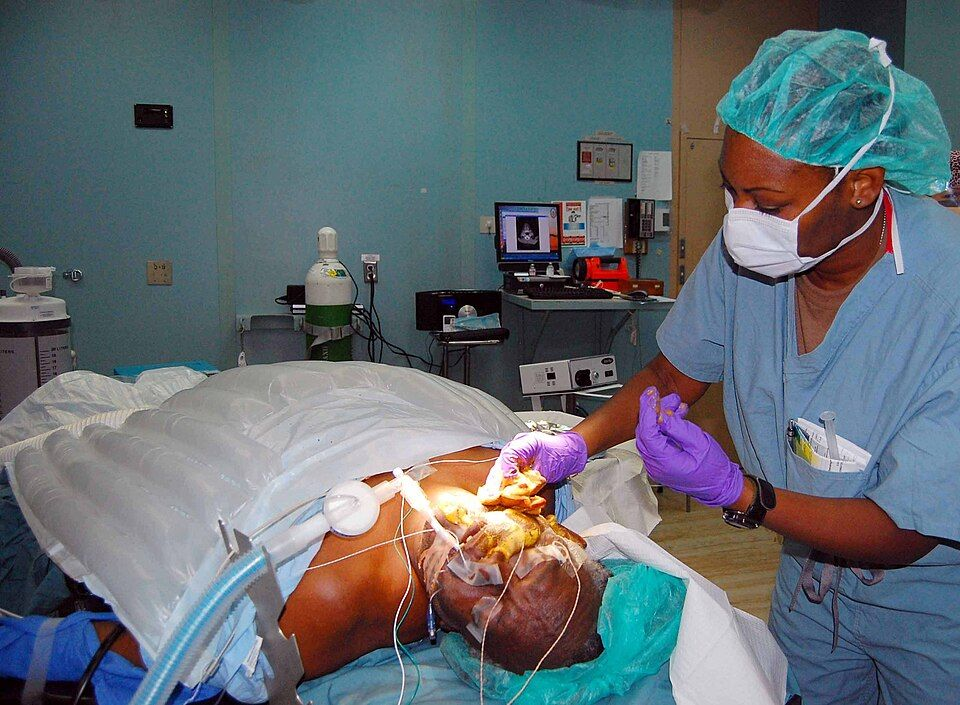

Higiene de manos
Es la medida más eficaz y más barata para evitar las infecciones relacionadas con la asistencia sanitaria. La OMS resume cuándo hacerla en cinco momentos.
Revisado en noviembre de 2026 · Fuentes al final de la página

,_cleans_and_prepares_a_patients_skin_for_surgery.jpg){kind=link}
Los cinco momentos
- Antes del contacto con el paciente. Al darle la mano, ayudarle a moverse o explorarle.
- Antes de una tarea limpia o aséptica. Por ejemplo, antes de manipular un catéter, preparar medicación o hacer una cura.
- Después del riesgo de exposición a fluidos corporales. Tras extraer sangre, vaciar una bolsa de orina o quitarse los guantes.
- Después del contacto con el paciente. Al terminar de atenderle.
- Después del contacto con el entorno del paciente. Aunque no le hayas tocado: barandillas, mesilla, bombas de perfusión.
Con solución alcohólica o con agua y jabón
| Solución alcohólica | Agua y jabón | |
|---|---|---|
| Cuándo | Es la opción de elección si las manos no están visiblemente sucias | Manos visiblemente sucias o manchadas de fluidos, y tras atender a pacientes con Clostridioides difficile o norovirus |
| Duración | 20–30 s | 40–60 s |
La técnica
- Aplica producto suficiente para cubrir toda la superficie de las manos.
- Frota palma con palma.
- Palma derecha sobre el dorso izquierdo con los dedos entrelazados, y al revés.
- Palma con palma con los dedos entrelazados.
- Dorso de los dedos contra la palma opuesta, con los dedos unidos.
- Frota cada pulgar con un movimiento de rotación dentro de la otra mano.
- Frota las yemas contra la palma opuesta con movimientos circulares.
- Deja secar al aire. Con agua y jabón, aclara y seca con toalla de un solo uso y cierra el grifo con ella.
Los guantes no sustituyen la higiene de manos. Hay que hacerla antes de ponérselos cuando la tarea lo requiera y siempre después de quitárselos.
Errores frecuentes
- Llevar anillos, reloj, pulseras o uñas artificiales, que impiden una limpieza correcta.
- Olvidar los pulgares, las yemas y el espacio entre los dedos.
- Usar la solución con las manos mojadas, porque se diluye y pierde eficacia.
- No esperar a que se seque antes de tocar al paciente.
Fuentes
- Organización Mundial de la Salud. WHO Guidelines on Hand Hygiene in Health Care. Ginebra: OMS; 2009, y material de la campaña «Sus 5 momentos para la higiene de las manos». www.who.int
- Ministerio de Sanidad. Programa de Higiene de Manos del Sistema Nacional de Salud. seguridaddelpaciente.sanidad.gob.es